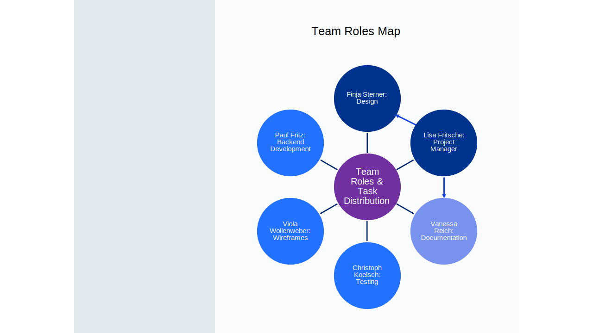

Pomodoro Timer – First Brainstorm
Meeting Topic: Brainstorming
Date: April 14, 2025
Attendance
- Christoph Koelsch
- Paul Fritz
- Vanessa Reich
- Viola Wollenweber
- Finja Sterner
- Lisa Fritsche
Agenda
- Welcome and check-in
- Team status updates
- Discussion: Pomodoro Timer features
- Task distribution
- Wrap-up and next steps
Unfinished Business
- Finalize wireframe designs
- Assign team roles for project development
- Confirm deadline for first prototype
New Business
- Discuss potential UI design themes
- Set timeline for backend API development
- Decide on tools for team communication
Team Roles Diagram

Overview of the team role distribution after our first meeting.
Comments / Questions / Concerns
- Should we consider accessibility features early on?
- Concerns about meeting deadlines with current scope
- Question: Will we have a design mockup before development starts?